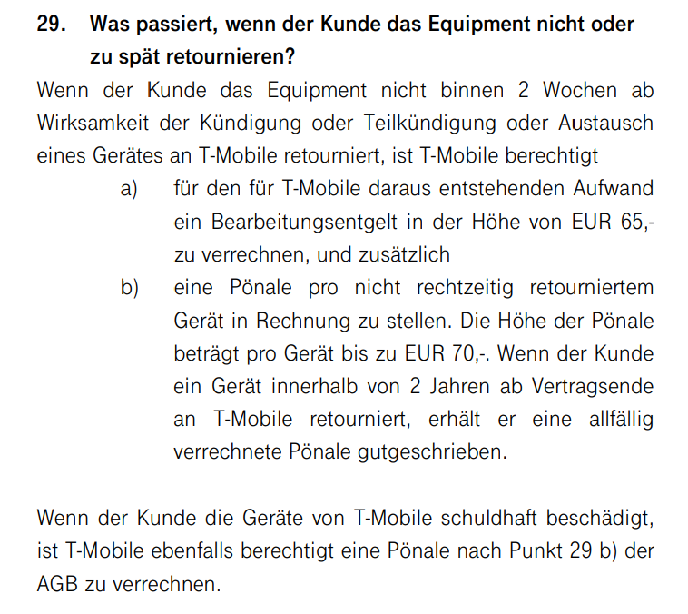

Hallo,
ich möchte gerne meinen Betreiber wechseln und möchte daher gerne wissen ob ich meine DSL-Fritzbox behalten darf und wenn ja was das kostet.
Danke!
Hey
@Bernardo
An sich müssen die Fritz!Boxen wieder zurück.
Wenn du diese aber nicht zurücksendest innerhalb von 14 Tagen, ab Wirksamkeit der Kündigung, werden 135€ fällig (65€ Bearbeitungsgebühr + 70€ Pönale).
Hier noch der Auszug aus den aktuellen Allgemeine Geschäftsbedingungen für Privatkundenprodukte auf DSL-Basis (zu finden unter AGB -> Privatkunden):

Informiere dich aber auch mal beim neuen Provider welche Modems dieser zur Verfügung stellt.
LG NTM
Bearbeitet von NTMvor 13 Stunden schrieb NTM:Hey @Bernardo
An sich müssen die Fritz!Boxen wieder zurück.Wenn du diese aber nicht zurücksendest innerhalb von 14 Tagen, ab Wirksamkeit der Kündigung, werden 135€ fällig (65€ Bearbeitungsgebühr + 70€ Pönale).
Hier noch der Auszug aus den aktuellen Allgemeine Geschäftsbedingungen für Privatkundenprodukte auf DSL-Basis (zu finden unter AGB -> Privatkunden):
Informiere dich aber auch mal beim neuen Provider welche Modems dieser zur Verfügung stellt.
LG NTM
Hallo!
Es ist schade, dass meine Anfrage bloss so verstanden wurde als würde ich als Kunde ausschliesslich vorhaben dem Unternehmen zu schaden. Meine Intention war bestimmt nicht eine Hardware unrechtmässig zu entwenden sondern viel mehr ein gebrauchtes Teil legal ablösen zu können. Aus sicherer interner Quelle weiss ich, dass mit einer großen Menge rücklaufender Modems absolut nichts mehr unternommen wird, denn sie gehören mit ihrem Betriebsalter nicht mehr zu den Modems die wieder ausgegeben werden können.
Meine Anfrage ist in erster Linie in die Richtung gegangen ob es vielleicht die Möglichkeit des rechtmäßigen Erwerbs einer "refurbished hardware" geben würde und nicht die der vorsätzlichen Entwendung.
Allein schon die Antwort mit den Paragraphen aus den AGB vermittelt mir schon die fehlende Bereitschaft zu einer pragmatischen Lösung, geschweige einer Fähigkeit zur Weiterentwicklung im Sinnes des customer service. Der bis zum Unternehmensübergang bestehende spirit von UPC ist ganz in der nachteiligen Arbeitsweise des neuen Eigentümers untergegangen. Das finde ich sehr schade!
Schade, dass Magenta in diesem Fall so mit mir kommuniziert und es bestätigt mich in der Einschätzung, dass hier ein Betreiberwechsel zu einem Mitbewerber schon allein aus Vertrauensgründen die bessere Wahl wäre. Abgesehen davon ist nebst der immensen Werbekampagne vom Mai 2019 im DSL Bereich ein sehr ernüchternder bis enttäuschender Eindruck hinsichtlich des Technologieangebots und der verfügbaren Produkte eingetreten. Wenn ich auf der Webseite nach einem Tarifmodell suche das meiner Anschlussart und Adresse entspricht wird mir DSL nicht mehr angeboten sondern nur mehr Fiber, welches weiterhin nicht verfügbar ist, obwohl das Glasfaserkabel technisch verfügbar wäre aber weiterhin von Magenta nicht angeschlossen wird. Ebenso ist der Verfügbarkeitscheck nicht mehr zu finden, man kann also nicht mehr die Produkte auflisten, die an einer bestimmten Adresse verfügbar sind. Damit wird Magenta nur mehr noch für einen kleineren, elitären Kreis von Kunden nutzbar und das ist bestimmt nicht im Sinne der B2C Strategie und auch nicht im Sinne des CEOs Andreas Bierwirth. Seine klare Botschaft war "Der Nummer 1 Anbieter in Österreich" zu werden.
Hey
@Bernardo
Ich bin hier nicht im Auftrag von Magenta unterwegs, sondern ein User, welcher gerne anderen weiterhilft, wenn sie sich im Technologie- und Vertrags-
Dschungel
nicht auskennen.
Mitarbeiter von Magenta sind als Administrator, Moderator oder Magenta Experte hier im Forum gekennzeichnet (siehe hier: Besondere Usergruppen & Userstatus in der Community ).
Zudem sich ordentliche Quellenangaben meiner Meinung nach sehr wichtig (auch mit dem genauen Wortlaut).
Wenn du eine verbindliche Antwort haben willst kontaktiere am besten den Support von Magenta bzw frage deinen internen Kontakt.
LG NTM
Bearbeitet von NTM
Hallo @Bernardo
bei der Magenta Community handelt es sich um eine Plattform, bei der User anderen Usern helfen. Bei den meisten unserer User handelt es sich einfach Kunden, welche sich gerne zu bestimmten Themen unterhalten oder ihr Wissen zu Technologien oder Produkten mit anderen Usern teilen. NTMs Antwort war außerdem vollkommen korrekt. Er hat dir lediglich den Hinweis auf eine mögliche Pauschale gegeben - eine Unterstellung kann ich hier nicht erkennen. Hast du detaillierte Fragen zu deinem Vertrag oder möchtest eine individuelle Lösung bzw. Support, ist unser Serviceteam der richtige Ansprechpartner. Die Kolleginnen und Kollegen besprechen deinen Fall dann mit dir im Detail.
Dein Feedback zu unserer Webseite und zum Verfügbarkeitscheck gebe ich gerne an unsere zuständigen Kolleginnen und Kollegen weiter.
LG
Hallo,
Ich wusste nicht, dass in diesem Forum auch Kunden Anfragen beantworten werden.
ja im Sinne von https://www.linkedin.com/posts/andreas-bierwirth-942b49183_bleibverbunden-activity-6651485838356156416-d04M
wäre es toll eine Verbesserung auch endlich an meinem Anschluss zu erreichen! Seit ca. 10 Jahren gibt es keine Innovation und keine Performancesteigerung.
Gerade jetzt ist die stabile Verfügbarkeit eines (DSL) Anschlusses der größtenteils mit alter Infrastruktur realisiert wurde sehr wichtig, weil das meine Verbindung in die Aussenwelt und dem Geschäftsleben realisiert. Sobald ich leitungsintensive Applikationen verwende falle ich ins timeout oder bekomme Fehlermeldungen. Dienste wie webex oder Teams funktionieren nur sehr eingschränkt und sharepoint geht nur mit kleinen Dateien. Entgegen der Initative der Bundesregierung auch schlechter versorgte Gebiete jetzt besser zu versorgen bemerke ich hier aufgrund der vergrösserten Datenmenge deutliche Einschränkungen bei der Erfüllung meiner täglichen Arbeit. Abgesehen davon sind Annehmlichkeiten wie streaming oder downloads sowieso kaum möglich.
Ich weiss nicht wie oft ich mich schon an den Support gewendet habe, die letzten Male ist es einfach daran gescheitert, dass meine Leitung nicht auf vULL umgestellt werden kann, da A1 der Magenta diese Leistung nicht anbieten will. A1 selber bietet mir den Umstieg aber an sofern ich den Providerwechsel zu ihnen mache. Das dürfte so nicht sein und verletzt klar den freien Wettbewerb, denn meine Kupferleitung, die aus dem Jahr 1976 stammt wurde mit Steuergeld als Infrastruktur errichtet und sollte von allen Betreibern frei verwendet werden können.
{kind=link}